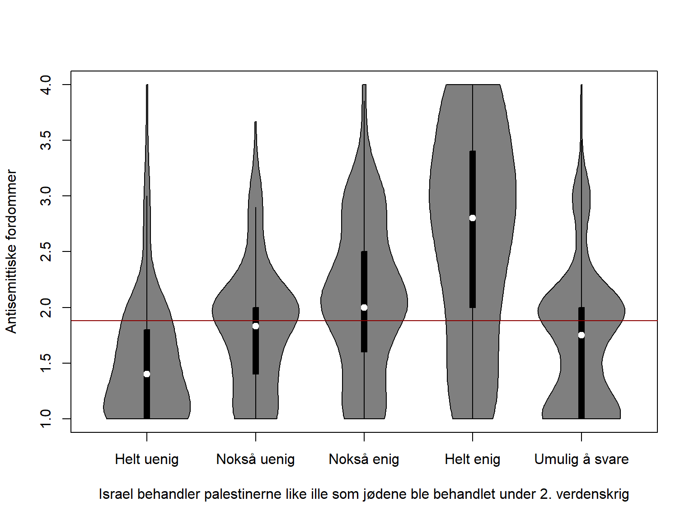
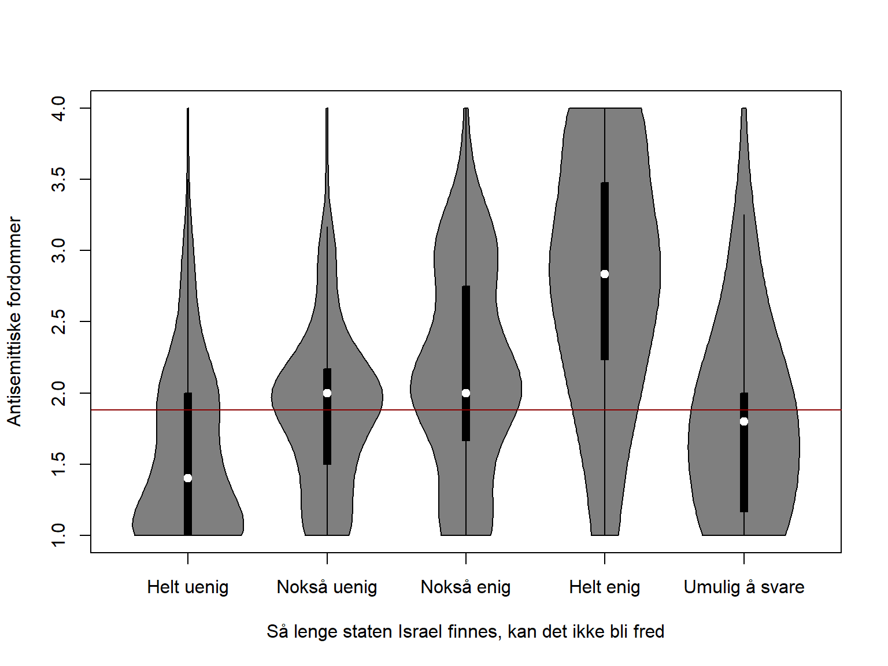
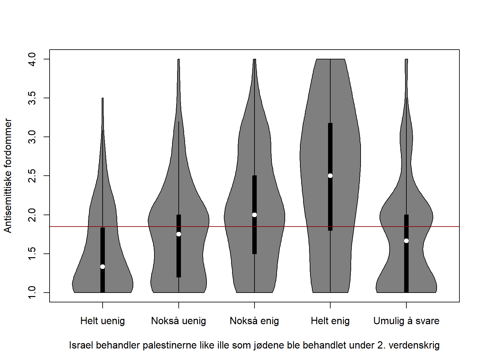
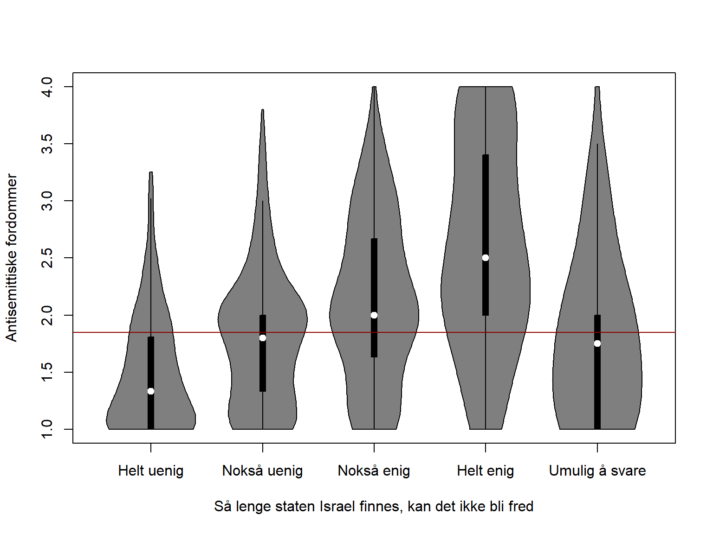

Et analysenotat basert på data fra HL-senterets holdningsundersøkelser fra 2017 og 2022
Forfatter
Tilknytning
Johannes Due Enstad
Institutt for samfunnsforskning
Utgitt
4. september 2025
Innledning
Spørsmålet om forholdet mellom Israel-fiendtlighet og jødefiendtlighet diskuteres stadig i offentligheten. Noen hevder at antisemittitiske forestillinger er sammenfiltret med fiendtlighet mot Israel, mens andre betviler en slik sammenheng. På bakgrunn av å ha ledet et forskningsprosjekt om antisemittisme i Europa, har jeg noe å si om temaet. Jeg har tidligere skrevet om saken her, her og her. Formålet med dette lille analysenotatet er å bringe til torgs et forsterket empirisk grunnlag for diskusjonen.
I det følgende presenteres en serie enkle, bivariate analyser som undersøker sammenhengen mellom Israel-fiendtlige og antisemittiske holdninger i Norge. Datagrunnlaget er to nasjonalt representative spørreundersøkelser gjennomført av HL-senteret i 2017 (N = 1575) og 2022 (N = 1653) (Hoffmann 2024; Moe mfl. 2024). (HL-senteret gjennomførte en ny undersøkelse i 2024, men disse dataene er i skrivende stund ikke tilgjengeliggjort.) Resultatene viser at personer som støtter Israel-fiendtlige påstander, gir uttrykk for antisemittiske holdninger i sterkere grad enn andre.
Datagrunnlaget for analysene er tilgjengelig via Sikt:
Analysekode for R er integrert i dette dokumentet.
Laste inn og klargjøre data
# Laste pakkerpacman::p_load(here, haven, tidyverse, psych, effsize, sjPlot, datawizard, vioplot, labelled, knitr, kableExtra, vtable, summarytools, jtools)# Last inn 2017-datadf <-read_sav(here("data", "NSD2879-no.sav"))df <-subset(df, year ==2017)df <-subset(df, UTVALG ==1)# 2022-data df2 <-read_sav(here("data", "NSD3151.sav"))df2 <-subset(df2, UTVALG ==1)# NAdf[df ==9996] <-NAdf2[df2 ==9996] <-NA# Mål på Israel-fiendtlighet# 1: "Israel behandler palestinerne like ille som jødene ble behandlet under 2. verdenskrig"df$anti_israel1 <- df$Q46_5df$anti_israel1[df$anti_israel1 ==6] <-NAdf$anti_israel1_1 <- df$anti_israel1df$anti_israel1_1[df$anti_israel1_1 ==5] <-NA# "Vet ikke" som NAdf2$anti_israel1 <- df2$Q465df2$anti_israel1[df2$anti_israel1 ==6] <-NAdf2$anti_israel1_1 <- df2$anti_israel1df2$anti_israel1_1[df2$anti_israel1_1 ==5] <-NA# 2: "Så lenge staten Israel finnes, kan det ikke bli fred"df$anti_israel2 <- df$Q46_1df$anti_israel2[df$anti_israel2 ==6] <-NAdf$anti_israel2_1 <- df$anti_israel2df$anti_israel2_1[df$anti_israel2_1 ==5] <-NAdf2$anti_israel2 <- df2$Q461df2$anti_israel2[df2$anti_israel2 ==6] <-NAdf2$anti_israel2_1 <- df2$anti_israel2df2$anti_israel2_1[df2$anti_israel2_1 ==5] <-NA# Antisemittismeskala basert på 6 spørsmål som uttrykker tradisjonelle antijødiske fordommer (e.g., "Jøder har selv mye av skylden for at de er blitt forfulgt")prejudice_items_2017 <- df[, c("Q21_2", "Q21_3", "Q21_4", "Q21_6", "Q21_8", "Q21_9")]prejudice_items_2017 <-lapply(prejudice_items_2017, function(x) { x[x ==5] <-NAreturn(x)})prejudice_items_2017 <-as.data.frame(prejudice_items_2017)colnames(prejudice_items_2017) <-paste0(colnames(df[, c("Q21_2", "Q21_3", "Q21_4", "Q21_6", "Q21_8", "Q21_9")]), "_recoded")df <-cbind(df, prejudice_items_2017)prejudice_items_2022 <- df2[, c("Q212", "Q213", "Q214", "Q216", "Q218", "Q219")]prejudice_items_2022 <-lapply(prejudice_items_2022, function(x) { x[x ==5] <-NAreturn(x)})prejudice_items_2022 <-as.data.frame(prejudice_items_2022)colnames(prejudice_items_2022) <-paste0(colnames(df2[, c("Q212", "Q213", "Q214", "Q216", "Q218", "Q219")]), "_recoded")df2 <-cbind(df2, prejudice_items_2022)
Variabler
Israel-fiendtlige holdninger: En kan skille mellom kritikk av israelske politiske og militære handlinger og en mer grunnleggende fiendtlighet rettet mot Israel som sådan. For å måle sistnevnte, brukes her to påstander:
“Israel behandler palestinerne like ille som jødene ble behandlet under 2. verdenskrig.”
“Så lenge staten Israel finnes, kan det ikke bli fred.”
Begge påstandene har fem svaralternativer: “Stemmer ikke i det hele tatt”, “Stemmer nokså dårlig”, “Stemmer nokså godt”, “Stemmer helt”, eller “Umulig å svare”.
Antisemittiske fordommer: Her anvendes en skala konstruert på basis av seks påstander som måler tradisjonelle antijødiske fordommer (for eksempel: “Jøder har selv mye av skylden for at de er blitt forfulgt”). Svaralternativene er som ovenfor. For å konstruere skalaen, blir “Umulig å svare” sjaltet ut før snittet av svarene på de seks påstandene beregnes, hvilket resulterer i en skala fra 1 til 4. Skalaen har høy indre konsistens, som betyr at påstandene “trekker i samme retning” (Cronbach’s \(\alpha\) = .94).
Spørreundersøkelsene inneholder også påstander som måler sympati/antipati og sosial avstand. Disse er ikke anvendt her.
Tabell 1 gir en oversikt over svarfordeling for variablene som brukes i analysen.
Kode
df$anti_israel1 <-factor( df$anti_israel1,levels =1:5,labels =c("Stemmer ikke i det hele tatt", "Stemmer nokså dårlig", "Stemmer nokså godt", "Stemmer helt", "Umulig å svare"))df$anti_israel2 <-factor( df$anti_israel2,levels =1:5,labels =c("Stemmer ikke i det hele tatt", "Stemmer nokså dårlig", "Stemmer nokså godt", "Stemmer helt", "Umulig å svare"))st(df, vars =c("anti_israel1", "anti_israel2", "antisemittisme"), labels =c("Israel behandler palestinerne like ille som jødene ble behandlet under 2. verdenskrig", "Så lenge staten Israel finnes, kan det ikke bli fred", "Antisemittismeskala"), summ =c("notNA(x)", "mean(x)", "sd(x)", "min(x)", "max(x)"), summ.names =c("N", "Snitt/prosent", "Std.avvik", "Min", "Max"), title ="2017", out ="kable")df2$anti_israel1 <-factor( df2$anti_israel1,levels =1:5,labels =c("Stemmer ikke i det hele tatt", "Stemmer nokså dårlig", "Stemmer nokså godt", "Stemmer helt", "Umulig å svare"))df2$anti_israel2 <-factor( df2$anti_israel2,levels =1:5,labels =c("Stemmer ikke i det hele tatt", "Stemmer nokså dårlig", "Stemmer nokså godt", "Stemmer helt", "Umulig å svare"))st(df2, vars =c("anti_israel1", "anti_israel2", "antisemittisme"), labels =c("Israel behandler palestinerne like ille som jødene ble behandlet under 2. verdenskrig", "Så lenge staten Israel finnes, kan det ikke bli fred", "Antisemittismeskala"), summ =c("notNA(x)", "mean(x)", "sd(x)", "min(x)", "max(x)"), summ.names =c("N", "Snitt/prosent", "Std.avvik", "Min", "Max"), title ="2022", out ="kable")
Tabell 1: Deskriptiv statistikk
2017
Variable
N
Snitt/prosent
Std.avvik
Min
Max
Israel behandler palestinerne like ille som jødene ble behandlet under 2. verdenskrig
1570
... Stemmer ikke i det hele tatt
157
10%
... Stemmer nokså dårlig
311
20%
... Stemmer nokså godt
411
26%
... Stemmer helt
112
7%
... Umulig å svare
579
37%
Så lenge staten Israel finnes, kan det ikke bli fred
1574
... Stemmer ikke i det hele tatt
212
13%
... Stemmer nokså dårlig
313
20%
... Stemmer nokså godt
249
16%
... Stemmer helt
78
5%
... Umulig å svare
722
46%
Antisemittismeskala
1392
1.9
0.71
1
4
2022
Variable
N
Snitt/prosent
Std.avvik
Min
Max
Israel behandler palestinerne like ille som jødene ble behandlet under 2. verdenskrig
1632
... Stemmer ikke i det hele tatt
214
13%
... Stemmer nokså dårlig
341
21%
... Stemmer nokså godt
427
26%
... Stemmer helt
134
8%
... Umulig å svare
516
32%
Så lenge staten Israel finnes, kan det ikke bli fred
1626
... Stemmer ikke i det hele tatt
248
15%
... Stemmer nokså dårlig
322
20%
... Stemmer nokså godt
282
17%
... Stemmer helt
121
7%
... Umulig å svare
653
40%
Antisemittismeskala
1479
1.9
0.73
1
4
Fiolinplott: fordeling av antisemittisme etter grad av Israel-fiendtlighet
I Figur 1 og Figur 2 ser vi hvordan respondentenes skåre på antisemittismeskalaen fordeler seg etter svar på spørsmålene som måler Israel-fiendtlighet. Fiolinplottets bredde viser hvor tett datapunktene er samlet rundt ulike verdier av y-aksen. Det sentrale punktet viser medianverdien, og den uthevede svarte linjen viser interkvartilavstanden. Den røde linjen viser gjennomsnittsskåre på antisemittismeskalaen for alle respondentene.
Kode
# Fiolonplott 2017vioplot(antisemittisme ~ anti_israel1,data = df,names =c("Helt uenig", "Nokså uenig", "Nokså enig", "Helt enig", "Umulig å svare"),xlab ="Israel behandler palestinerne like ille som jødene ble behandlet under 2. verdenskrig", ylab ="Antisemittiske fordommer")abline(h =1.88, col ="darkred", lwd =1) vioplot(antisemittisme ~ anti_israel2,data = df,names =c("Helt uenig", "Nokså uenig", "Nokså enig", "Helt enig", "Umulig å svare"),xlab ="Så lenge staten Israel finnes, kan det ikke bli fred", ylab ="Antisemittiske fordommer")abline(h =1.88, col ="darkred", lwd =1)

(a)

(b)
Figur 1: Fordeling av skåre på antisemittismeskalaen etter grad av Israel-fiendtlige holdninger (2017)
Kode
# fiolinplott 2022vioplot(antisemittisme ~ anti_israel1,data = df2,names =c("Helt uenig", "Nokså uenig", "Nokså enig", "Helt enig", "Umulig å svare"),xlab ="Israel behandler palestinerne like ille som jødene ble behandlet under 2. verdenskrig", ylab ="Antisemittiske fordommer",)abline(h =1.85, col ="darkred", lwd =1)vioplot(antisemittisme ~ anti_israel2,data = df2,names =c("Helt uenig", "Nokså uenig", "Nokså enig", "Helt enig", "Umulig å svare"),xlab ="Så lenge staten Israel finnes, kan det ikke bli fred", ylab ="Antisemittiske fordommer")abline(h =1.85, col ="darkred", lwd =1)

(a)

(b)
Figur 2: Fordeling av skåre på antisemittismeskalaen etter nivå på Israel-fiendtlige holdninger (2022)
Figurene viser et tydelig og gjennomgående mønster: jo mer enig respondentene er i de Israel-fiendtlige påstandene, jo høyere skårer de på antisemittismeskalaen. Det er tydelig at gruppen av respondenter som er “helt enig” i de antiisraelske påstandene, har betraktelig høyere sannsynlighet for å skåre over snittet på antisemittismeskalaen.
Effektstørrelser
Analysene som presenteres her, kan ikke slå fast at antisemittiske fordommer forårsaker Israel-fiendtlighet eller vice versa. Det er likevel nyttig å vurdere styrken på den sammenhengen vi kan observere i dataene, eller effektstørrelsen. Er det en svak, moderat, eller sterk sammenheng?
Tabell 2: Styrken på sammenhengen mellom antisemittiske fordommer og Israel-fiendtlige holdninger
Variabel
Korrelasjon
b
Cohen's d
R²
2017
Israel behandler palestinerne like ille som...
0.420
0.506
0.76 [0.64, 0.87]
0.115
Så lenge staten Israel finnes...
0.446
0.539
0.8 [0.67, 0.93]
0.099
2022
Israel behandler palestinerne like ille som...
0.376
0.457
0.66 [0.55, 0.76]
0.090
Så lenge staten Israel finnes...
0.466
0.555
0.8 [0.68, 0.93]
0.109
Tabell 2 viser resultatene av enkle korrelasjonsanalyser, regresjonsanalyser, og beregninger av Cohen’s d, et standardisert mål på effektstørrelse.
Korrelasjoner
Korrelasjonen mellom antisemittismeskalaen og de to målene på Israel-fiendtlighet ligger mellom 0.38 og 0.47. Dette tilsvarer en relativt sterk sammenheng innenfor sosialpsykologisk forskning, der en tommelfingerregel er at korrelasjoner på rundt 0.12 representerer en svak effekt, rundt 0.25 en moderat effekt, og rundt 0.40 en sterk effekt (Lovakov og Agadullina 2021).
Regresjonskoeffisienter
Lineære regresjonsmodeller ble estimert med antisemittismeskalaen som avhengig variabel og Israel-fiendtlige påstander som uavhengig variabel. Her ble de uavhengige variablene omkodet for å kontrastere gruppen av respondenter som var “helt” eller “nokså” enig i Israel-fiendtlige påstander med alle andre respondenter.
Regresjonskoeffisientene (b) varierer fra 0.46 til 0.56, som betyr at det å være enig i Israel-fiendtlige påstander er forbundet med en forhøyet skåre på antisemittismeskalaen som tilsvarer rundt et halvt poeng. Hvor sterk er denne sammenhengen? For å svare på det, brukes her et standardisert mål på effektstørrelse, nemlig Cohen’s d.
Cohen’s d
Cohen’s d ligger mellom 0.66 og 0.80 for de Israel-fiendtlige påstandene og for begge år. Dette betyr at enighet med påstandene er forbundet med en forhøyet skåre på antisemittismeskalaen som tilsvarer mellom 66% og 80% av et standardavvik. Gitt at d = 0.65 regnes som en “stor” effekt i sosialpsykologi (Lovakov og Agadullina 2021), er det rimelig å beskrive de observerte sammenhengene som sterke.
Diskusjon
Resultatene tyder på en sterk og konsistent forbindelse mellom Israel-fiendtlige holdninger og antisemittiske fordommer i den norske befolkningen: jo mer enig folk er i Israel-fiendtlige påstander, jo høyere skårer de på antisemittismeskalaen. Mønstrene er gjennomgående på tvers av de to undersøkelsene fra 2017 og 2022.
Dette betyr ikke at de som er kritiske til eller fiendtlige mot Israel, nødvendigvis har antisemittiske holdninger, men at det er større sannsynlighet for å finne antisemittiske holdninger hos Israel-fiendtlige personer.
Mønstrene som påvises her, sier ikke noe om årsakssammenhenger. Det er plausibelt at en eventuell årsakssammenheng kan gå i begge retninger. For noen kan fiendtlige holdninger til Israel gi grobunn for jødefiendtlighet; for andre kan eksisterende antijødiske holdinger være det som foranlediger fiendtlighet mot Israel. Videre kan andre faktorer, som utdannelse og kunnskap, generell utgruppefiendtlighet eller ideologisk/religiøs overbevisning, ligge bak og virke sammen på ulike måter for å produsere eller begrense både antijødiske og antiisraelske holdninger. Slike faktorer er ikke tatt høyde for i disse analysene, ettersom hensikten simpelthen har vært å undersøke sammenhengen mellom de to typene av holdninger.
En rekke eksisterende forskningsstudier har funnet liknende sammenhenger mellom Israel-fiendtlighet og antisemittisme med data fra andre land, også etter å ha kontrollert for andre relevante faktorer (Cohen mfl. 2009; Cohen-Abady mfl. 2016; Enstad 2024; Hirsh 2018; Staetsky 2020). I en nylig publisert studie basert på data fra 12 EU-land, fant jeg at utbredelsen av negative syn på Israel var sterkt forbundet med jøders utsatthet for antisemittisk vold og trakassering—mens utbredelsen av eksplisitte antisemittiske fordommer ikke hadde noen slik effekt. Dette kan etter mitt syn tyde på at antisemittisk fiendtlighet er mer utbredt i befolkningen enn det man kan måle ved hjelp av tradisjonelle antijødiske påstander, og at sterk antipati mot Israel, som er mer sosialt akseptabelt, i mange tilfeller (men ikke alltid eller for alle) fungerer som et mer eller mindre subtilt uttrykk for underliggende antijødisk sentiment. I en annen studie, som i skrivende stund er under fagfellevurdering (se preprint), finner jeg, basert på norske data, en sterk sammenheng mellom Israel-fiendtlige holdninger og rettferdiggjøring av vold og trakassering mot jøder.
Analysene ble gjennomført i R version 4.4.1 (2024-06-14 ucrt). Dokument generert 2025-09-04.
Referanser
Cohen, Florette, Lee Jussim, Kent D. Harber, og Gautam Bhasin. 2009. «Modern Anti-Semitism and Anti-Israeli Attitudes». Journal of Personality and Social Psychology 97 (2): 290–306. https://doi.org/10.1037/a0015338.
Cohen-Abady, Florette, Daniel Kaplin, Lee Jussim, og Rachel Rubinstein. 2016. «The Modern Antisemitism–Israel Model (MASIM): Empirical Studies of North American Antisemitism». I Antisemitism in North America, redigert av Steven K. Baum, Neil J. Kressel, Florette Cohen, og Steven Leonard Jacobs, 94–118. Brill. https://doi.org/10.1163/9789004307148_007.
Enstad, Johannes Due. 2024. «Facing Antisemitism in Europe: Individual and Country-Level Predictors of Jews’ Victimization and Fear across Twelve Countries». Social Forces, juni, soae091. https://doi.org/10.1093/sf/soae091.
Hirsh, David. 2018. Contemporary Left Antisemitism. London; New York: Routledge.
Hoffmann, Christhard. 2024. «Attitudes Towards Jews and Muslims in Norway, 2011 and 2017». Sikt - Norwegian Agency for Shared Services in Education and Research. https://doi.org/10.18712/NSD-NSD2879-V3.
Lovakov, Andrey, og Elena R. Agadullina. 2021. «Empirically Derived Guidelines for Effect Size Interpretation in Social Psychology». European Journal of Social Psychology 51 (3): 485–504. https://doi.org/10.1002/ejsp.2752.
Moe, Vibeke, Cora Alexa Døving, Birgitte P. Haanshuus, Christhard Hoffmann, Claudia Lenz, Werner Bergmann, Ottar Hellevik, Anders Ravik Jupskås, Irene Levin, og Øyvind B. Solheim. 2024. «Attitudes towards Jews and Muslims in Norway, 2022: Population Survey, Minority Survey and Youth Study». Sikt - Norwegian Agency for Shared Services in Education and Research. https://doi.org/10.18712/NSD-NSD3151-V1.
Staetsky, L. Daniel. 2020. «The Left, the Right, Christians, Muslims and Detractors of Israel: Who Is Antisemitic in Great Britain in the Early 21st Century?»Contemporary Jewry 40 (2): 259–92. https://doi.org/10.1007/s12397-020-09335-1.
Kildekode
---title: "Henger Israel-fiendtlige og jødefiendtlige holdninger sammen?"subtitle: "Et analysenotat basert på data fra HL-senterets holdningsundersøkelser fra 2017 og 2022"author: - name: "Johannes Due Enstad" affiliation: - name: "Institutt for samfunnsforskning" city: "Oslo" email: "j.d.enstad@samfunnsforskning.no" orcid: "0000-0001-9658-7165"date: todayformat: html: theme: cosmo toc: true toc-depth: 3 code-fold: true code-tools: true code-copy: true fig-width: 8 fig-height: 6execute: message: false warning: false echo: truelang: nblocale: nb-NOcrossref: tbl-title: "Tabell" fig-title: "Figur" title-delim: ":" tbl-prefix: "Tabell" fig-prefix: "Figur"bibliography: refs/mylibrary.bib---# InnledningSpørsmålet om forholdet mellom Israel-fiendtlighet og jødefiendtlighet diskuteres stadig i offentligheten. Noen hevder at antisemittitiske forestillinger er sammenfiltret med fiendtlighet mot Israel, mens andre betviler en slik sammenheng. På bakgrunn av å ha ledet et [forskningsprosjekt](https://johannesdue.github.io/chaceweb/) om antisemittisme i Europa, har jeg noe å si om temaet. Jeg har tidligere skrevet om saken [her](https://www.vg.no/nyheter/i/3E8xrP/den-nye-antisemittismen), [her](https://johannesdue.github.io/chaceweb/assets/enstad_kk_20240507.pdf) og [her](https://samfunnsforskning.brage.unit.no/samfunnsforskning-xmlui/bitstream/handle/11250/3176040/enstad_det_eldste_hatet_Agora_1-2_2024_.pdf?sequence=4&isAllowed=y). Formålet med dette lille analysenotatet er å bringe til torgs et forsterket empirisk grunnlag for diskusjonen.I det følgende presenteres en serie enkle, bivariate analyser som undersøker sammenhengen mellom Israel-fiendtlige og antisemittiske holdninger i Norge. Datagrunnlaget er to nasjonalt representative spørreundersøkelser gjennomført av HL-senteret i 2017 (N = 1575) og 2022 (N = 1653) [@Hoffmann2024Attitudes; @Moe2024Attitudes]. (HL-senteret gjennomførte en ny undersøkelse i 2024, men disse dataene er i skrivende stund ikke tilgjengeliggjort.) Resultatene viser at personer som støtter Israel-fiendtlige påstander, gir uttrykk for antisemittiske holdninger i sterkere grad enn andre.Datagrunnlaget for analysene er tilgjengelig via Sikt:- 2017-data: <https://doi.org/10.18712/NSD-NSD2879-V3>- 2022-data: <https://doi.org/10.18712/NSD-NSD3151-V1>Analysekode for R er integrert i dette dokumentet.```{r setup}#| label: setup#| code-summary: "Laste inn og klargjøre data"# Laste pakkerpacman::p_load(here, haven, tidyverse, psych, effsize, sjPlot, datawizard, vioplot, labelled, knitr, kableExtra, vtable, summarytools, jtools)# Last inn 2017-datadf <- read_sav(here("data", "NSD2879-no.sav"))df <- subset(df, year == 2017)df <- subset(df, UTVALG == 1)# 2022-data df2 <- read_sav(here("data", "NSD3151.sav"))df2 <- subset(df2, UTVALG == 1)# NAdf[df == 9996] <- NAdf2[df2 == 9996] <- NA# Mål på Israel-fiendtlighet# 1: "Israel behandler palestinerne like ille som jødene ble behandlet under 2. verdenskrig"df$anti_israel1 <- df$Q46_5df$anti_israel1[df$anti_israel1 == 6] <- NAdf$anti_israel1_1 <- df$anti_israel1df$anti_israel1_1[df$anti_israel1_1 == 5] <- NA # "Vet ikke" som NAdf2$anti_israel1 <- df2$Q465df2$anti_israel1[df2$anti_israel1 == 6] <- NAdf2$anti_israel1_1 <- df2$anti_israel1df2$anti_israel1_1[df2$anti_israel1_1 == 5] <- NA# 2: "Så lenge staten Israel finnes, kan det ikke bli fred"df$anti_israel2 <- df$Q46_1df$anti_israel2[df$anti_israel2 == 6] <- NAdf$anti_israel2_1 <- df$anti_israel2df$anti_israel2_1[df$anti_israel2_1 == 5] <- NAdf2$anti_israel2 <- df2$Q461df2$anti_israel2[df2$anti_israel2 == 6] <- NAdf2$anti_israel2_1 <- df2$anti_israel2df2$anti_israel2_1[df2$anti_israel2_1 == 5] <- NA# Antisemittismeskala basert på 6 spørsmål som uttrykker tradisjonelle antijødiske fordommer (e.g., "Jøder har selv mye av skylden for at de er blitt forfulgt")prejudice_items_2017 <- df[, c("Q21_2", "Q21_3", "Q21_4", "Q21_6", "Q21_8", "Q21_9")]prejudice_items_2017 <- lapply(prejudice_items_2017, function(x) { x[x == 5] <- NA return(x)})prejudice_items_2017 <- as.data.frame(prejudice_items_2017)colnames(prejudice_items_2017) <- paste0(colnames(df[, c("Q21_2", "Q21_3", "Q21_4", "Q21_6", "Q21_8", "Q21_9")]), "_recoded")df <- cbind(df, prejudice_items_2017)prejudice_items_2022 <- df2[, c("Q212", "Q213", "Q214", "Q216", "Q218", "Q219")]prejudice_items_2022 <- lapply(prejudice_items_2022, function(x) { x[x == 5] <- NA return(x)})prejudice_items_2022 <- as.data.frame(prejudice_items_2022)colnames(prejudice_items_2022) <- paste0(colnames(df2[, c("Q212", "Q213", "Q214", "Q216", "Q218", "Q219")]), "_recoded")df2 <- cbind(df2, prejudice_items_2022)```# Variabler**Israel-fiendtlige holdninger:** En kan skille mellom kritikk av israelske politiske og militære handlinger og en mer grunnleggende fiendtlighet rettet mot Israel som sådan. For å måle sistnevnte, brukes her to påstander:1. "Israel behandler palestinerne like ille som jødene ble behandlet under 2. verdenskrig."2. "Så lenge staten Israel finnes, kan det ikke bli fred."Begge påstandene har fem svaralternativer: "Stemmer ikke i det hele tatt", "Stemmer nokså dårlig", "Stemmer nokså godt", "Stemmer helt", eller "Umulig å svare".**Antisemittiske fordommer:** Her anvendes en skala konstruert på basis av seks påstander som måler tradisjonelle antijødiske fordommer (for eksempel: "Jøder har selv mye av skylden for at de er blitt forfulgt"). Svaralternativene er som ovenfor. For å konstruere skalaen, blir "Umulig å svare" sjaltet ut før snittet av svarene på de seks påstandene beregnes, hvilket resulterer i en skala fra 1 til 4. Skalaen har høy indre konsistens, som betyr at påstandene "trekker i samme retning" (Cronbach's $\alpha$ = .94).Spørreundersøkelsene inneholder også påstander som måler sympati/antipati og sosial avstand. Disse er ikke anvendt her.```{r reliability}#| label: reliabilitet#| code-summary: "Kode"# Cronbach's alphaalpha_2017 <- psych::alpha(df[, c("Q21_2_recoded", "Q21_3_recoded", "Q21_4_recoded", "Q21_6_recoded", "Q21_8_recoded", "Q21_9_recoded")])alpha_2022 <- psych::alpha(df2[, c("Q212_recoded", "Q213_recoded", "Q214_recoded", "Q216_recoded", "Q218_recoded", "Q219_recoded")])# Lag skalaendf$antisemittisme <- rowMeans(df[, c("Q21_2_recoded", "Q21_3_recoded", "Q21_4_recoded", "Q21_6_recoded", "Q21_8_recoded", "Q21_9_recoded")], na.rm = T)df2$antisemittisme <- rowMeans(df2[, c("Q212_recoded", "Q213_recoded", "Q214_recoded", "Q216_recoded", "Q218_recoded", "Q219_recoded")], na.rm = T)```# Resultater## Deskriptiv statistikk@tbl-1 gir en oversikt over svarfordeling for variablene som brukes i analysen.```{r descriptives}#| label: tbl-1#| tbl-cap: "Deskriptiv statistikk"#| code-summary: "Kode"df$anti_israel1 <- factor( df$anti_israel1, levels = 1:5, labels = c("Stemmer ikke i det hele tatt", "Stemmer nokså dårlig", "Stemmer nokså godt", "Stemmer helt", "Umulig å svare"))df$anti_israel2 <- factor( df$anti_israel2, levels = 1:5, labels = c("Stemmer ikke i det hele tatt", "Stemmer nokså dårlig", "Stemmer nokså godt", "Stemmer helt", "Umulig å svare"))st(df, vars = c("anti_israel1", "anti_israel2", "antisemittisme"), labels = c("Israel behandler palestinerne like ille som jødene ble behandlet under 2. verdenskrig", "Så lenge staten Israel finnes, kan det ikke bli fred", "Antisemittismeskala"), summ = c("notNA(x)", "mean(x)", "sd(x)", "min(x)", "max(x)"), summ.names = c("N", "Snitt/prosent", "Std.avvik", "Min", "Max"), title = "2017", out = "kable")df2$anti_israel1 <- factor( df2$anti_israel1, levels = 1:5, labels = c("Stemmer ikke i det hele tatt", "Stemmer nokså dårlig", "Stemmer nokså godt", "Stemmer helt", "Umulig å svare"))df2$anti_israel2 <- factor( df2$anti_israel2, levels = 1:5, labels = c("Stemmer ikke i det hele tatt", "Stemmer nokså dårlig", "Stemmer nokså godt", "Stemmer helt", "Umulig å svare"))st(df2, vars = c("anti_israel1", "anti_israel2", "antisemittisme"), labels = c("Israel behandler palestinerne like ille som jødene ble behandlet under 2. verdenskrig", "Så lenge staten Israel finnes, kan det ikke bli fred", "Antisemittismeskala"), summ = c("notNA(x)", "mean(x)", "sd(x)", "min(x)", "max(x)"), summ.names = c("N", "Snitt/prosent", "Std.avvik", "Min", "Max"), title = "2022", out = "kable")```## Fiolinplott: fordeling av antisemittisme etter grad av Israel-fiendtlighetI @fig-violin-2017 og @fig-violin-2022 ser vi hvordan respondentenes skåre på antisemittismeskalaen fordeler seg etter svar på spørsmålene som måler Israel-fiendtlighet. Fiolinplottets bredde viser hvor tett datapunktene er samlet rundt ulike verdier av y-aksen. Det sentrale punktet viser medianverdien, og den uthevede svarte linjen viser interkvartilavstanden. Den røde linjen viser gjennomsnittsskåre på antisemittismeskalaen for alle respondentene.```{r violin-plots-2017}#| label: fig-violin-2017#| fig-cap: "Fordeling av skåre på antisemittismeskalaen etter grad av Israel-fiendtlige holdninger (2017)"#| fig-subcap:#| - ""#| - ""#| layout-ncol: 1#| code-summary: "Kode"# Fiolonplott 2017vioplot(antisemittisme ~ anti_israel1, data = df, names = c("Helt uenig", "Nokså uenig", "Nokså enig", "Helt enig", "Umulig å svare"), xlab = "Israel behandler palestinerne like ille som jødene ble behandlet under 2. verdenskrig", ylab = "Antisemittiske fordommer")abline(h = 1.88, col = "darkred", lwd = 1) vioplot(antisemittisme ~ anti_israel2, data = df, names = c("Helt uenig", "Nokså uenig", "Nokså enig", "Helt enig", "Umulig å svare"), xlab = "Så lenge staten Israel finnes, kan det ikke bli fred", ylab = "Antisemittiske fordommer")abline(h = 1.88, col = "darkred", lwd = 1) ``````{r violin-plots-2022}#| label: fig-violin-2022#| fig-cap: "Fordeling av skåre på antisemittismeskalaen etter nivå på Israel-fiendtlige holdninger (2022)"#| fig-subcap:#| - ""#| - ""#| layout-ncol: 1#| code-summary: "Kode"# fiolinplott 2022vioplot(antisemittisme ~ anti_israel1, data = df2, names = c("Helt uenig", "Nokså uenig", "Nokså enig", "Helt enig", "Umulig å svare"), xlab = "Israel behandler palestinerne like ille som jødene ble behandlet under 2. verdenskrig", ylab = "Antisemittiske fordommer",)abline(h = 1.85, col = "darkred", lwd = 1)vioplot(antisemittisme ~ anti_israel2, data = df2, names = c("Helt uenig", "Nokså uenig", "Nokså enig", "Helt enig", "Umulig å svare"), xlab = "Så lenge staten Israel finnes, kan det ikke bli fred", ylab = "Antisemittiske fordommer")abline(h = 1.85, col = "darkred", lwd = 1) ```Figurene viser et tydelig og gjennomgående mønster: jo mer enig respondentene er i de Israel-fiendtlige påstandene, jo høyere skårer de på antisemittismeskalaen. Det er tydelig at gruppen av respondenter som er "helt enig" i de antiisraelske påstandene, har betraktelig høyere sannsynlighet for å skåre over snittet på antisemittismeskalaen.## EffektstørrelserAnalysene som presenteres her, kan ikke slå fast at antisemittiske fordommer *forårsaker* Israel-fiendtlighet eller vice versa. Det er likevel nyttig å vurdere styrken på den sammenhengen vi kan observere i dataene, eller effektstørrelsen. Er det en svak, moderat, eller sterk sammenheng?```{r resultater}#| label: tbl-2#| tbl-cap: "Styrken på sammenhengen mellom antisemittiske fordommer og Israel-fiendtlige holdninger"#| code-summary: "Kode"# korrelasjonercorr1_2017 <- corr.test(df$antisemittisme, df$anti_israel1_1)corr2_2017 <- corr.test(df$antisemittisme, df$anti_israel2_1)# Kontrastvariabler (helt enig i israel-fiendtlig påstnad vs. alle andre respondenter)df$anti_israel_contrast1 <- ifelse(df$Q46_5 %in% c(3, 4), 1, 0)df$anti_israel_contrast2 <- ifelse(df$Q46_1 %in% c(3, 4), 1, 0)# regresjonsmodellerm1_2017 <- lm(antisemittisme ~ anti_israel_contrast1, data = df)m2_2017 <- lm(antisemittisme ~ anti_israel_contrast2, data = df)# Cohen's dcohens_d1_2017 <- cohen.d( df$antisemittisme[df$anti_israel_contrast1 == 1], df$antisemittisme[df$anti_israel_contrast1 == 0], na.rm = T)cohens_d2_2017 <- cohen.d( df$antisemittisme[df$anti_israel_contrast2 == 1], df$antisemittisme[df$anti_israel_contrast2 == 0], na.rm = T)corr1_2022 <- corr.test(df2$antisemittisme, df2$anti_israel1_1)corr2_2022 <- corr.test(df2$antisemittisme, df2$anti_israel2_1)# Kontrastvariablerdf2$anti_israel_contrast1 <- ifelse(df2$Q465 %in% c(3, 4), 1, 0)df2$anti_israel_contrast2 <- ifelse(df2$Q461 %in% c(3, 4), 1, 0)# regresjonsmodellerm1_2022 <- lm(antisemittisme ~ anti_israel_contrast1, data = df2)m2_2022 <- lm(antisemittisme ~ anti_israel_contrast2, data = df2)# Cohen's dcohens_d1_2022 <- cohen.d( df2$antisemittisme[df2$anti_israel_contrast1 == 1], df2$antisemittisme[df2$anti_israel_contrast1 == 0], na.rm = T)cohens_d2_2022 <- cohen.d( df2$antisemittisme[df2$anti_israel_contrast2 == 1], df2$antisemittisme[df2$anti_israel_contrast2 == 0], na.rm = T)comparison <- tibble( Variabel = rep(c("Israel behandler palestinerne like ille som...", "Så lenge staten Israel finnes..."), 2), `Korrelasjon` = round(c(corr1_2017$r, corr2_2017$r, corr1_2022$r, corr2_2022$r), 3), `b` = round(c( coef(m1_2017)[2], coef(m2_2017)[2], coef(m1_2022)[2], coef(m2_2022)[2] ), 3), `Cohen's d` = paste0( round(c( cohens_d1_2017$estimate, cohens_d2_2017$estimate, cohens_d1_2022$estimate, cohens_d2_2022$estimate ), 2), " [", round(c( cohens_d1_2017$conf.int[1], cohens_d2_2017$conf.int[1], cohens_d1_2022$conf.int[1], cohens_d2_2022$conf.int[1] ), 2), ", ", round(c( cohens_d1_2017$conf.int[2], cohens_d2_2017$conf.int[2], cohens_d1_2022$conf.int[2], cohens_d2_2022$conf.int[2] ), 2), "]" ), `R²` = round(c( summary(m1_2017)$r.squared, summary(m2_2017)$r.squared, summary(m1_2022)$r.squared, summary(m2_2022)$r.squared ), 3))comparison %>% kbl() %>% kable_styling( bootstrap_options = c("striped", "hover"), full_width = F ) %>% pack_rows("2017", 1, 2, label_row_css = "text-align: left;") %>% pack_rows("2022", 3, 4, label_row_css = "text-align: left;")```@tbl-2 viser resultatene av enkle korrelasjonsanalyser, regresjonsanalyser, og beregninger av Cohen's *d*, et standardisert mål på effektstørrelse.### KorrelasjonerKorrelasjonen mellom antisemittismeskalaen og de to målene på Israel-fiendtlighet ligger mellom 0.38 og 0.47. Dette tilsvarer en relativt sterk sammenheng innenfor sosialpsykologisk forskning, der en tommelfingerregel er at korrelasjoner på rundt 0.12 representerer en svak effekt, rundt 0.25 en moderat effekt, og rundt 0.40 en sterk effekt [@lovakovEmpiricallyDerivedGuidelines2021].### RegresjonskoeffisienterLineære regresjonsmodeller ble estimert med antisemittismeskalaen som avhengig variabel og Israel-fiendtlige påstander som uavhengig variabel. Her ble de uavhengige variablene omkodet for å kontrastere gruppen av respondenter som var "helt" eller "nokså" enig i Israel-fiendtlige påstander med alle andre respondenter.Regresjonskoeffisientene (b) varierer fra 0.46 til 0.56, som betyr at det å være enig i Israel-fiendtlige påstander er forbundet med en forhøyet skåre på antisemittismeskalaen som tilsvarer rundt et halvt poeng. Hvor sterk er denne sammenhengen? For å svare på det, brukes her et standardisert mål på effektstørrelse, nemlig Cohen's *d*.### Cohen's *d*Cohen's *d* ligger mellom 0.66 og 0.80 for de Israel-fiendtlige påstandene og for begge år. Dette betyr at enighet med påstandene er forbundet med en forhøyet skåre på antisemittismeskalaen som tilsvarer mellom 66% og 80% av et standardavvik. Gitt at *d* = 0.65 regnes som en "stor" effekt i sosialpsykologi [@lovakovEmpiricallyDerivedGuidelines2021], er det rimelig å beskrive de observerte sammenhengene som sterke.# DiskusjonResultatene tyder på en sterk og konsistent forbindelse mellom Israel-fiendtlige holdninger og antisemittiske fordommer i den norske befolkningen: jo mer enig folk er i Israel-fiendtlige påstander, jo høyere skårer de på antisemittismeskalaen. Mønstrene er gjennomgående på tvers av de to undersøkelsene fra 2017 og 2022.Dette betyr ikke at de som er kritiske til eller fiendtlige mot Israel, nødvendigvis har antisemittiske holdninger, men at det er større sannsynlighet for å finne antisemittiske holdninger hos Israel-fiendtlige personer.Mønstrene som påvises her, sier ikke noe om årsakssammenhenger. Det er plausibelt at en eventuell årsakssammenheng kan gå i begge retninger. For noen kan fiendtlige holdninger til Israel gi grobunn for jødefiendtlighet; for andre kan eksisterende antijødiske holdinger være det som foranlediger fiendtlighet mot Israel. Videre kan andre faktorer, som utdannelse og kunnskap, generell utgruppefiendtlighet eller ideologisk/religiøs overbevisning, ligge bak og virke sammen på ulike måter for å produsere eller begrense både antijødiske og antiisraelske holdninger. Slike faktorer er ikke tatt høyde for i disse analysene, ettersom hensikten simpelthen har vært å undersøke sammenhengen mellom de to typene av holdninger.En rekke eksisterende forskningsstudier har funnet liknende sammenhenger mellom Israel-fiendtlighet og antisemittisme med data fra andre land, også etter å ha kontrollert for andre relevante faktorer [@cohenModernAntiSemitismAntiIsraeli2009; @cohen-abadyModernAntisemitismIsrael2016; @enstadFacingAntisemitismEurope2024; @hirshContemporaryLeftAntisemitism2018; @staetskyLeftRightChristians2020]. I en [nylig publisert studie](https://academic.oup.com/sf/article/103/3/1186/7701118) basert på data fra 12 EU-land, fant jeg at utbredelsen av negative syn på Israel var sterkt forbundet med jøders utsatthet for antisemittisk vold og trakassering---mens utbredelsen av eksplisitte antisemittiske fordommer *ikke* hadde noen slik effekt. Dette kan etter mitt syn tyde på at antisemittisk fiendtlighet er mer utbredt i befolkningen enn det man kan måle ved hjelp av tradisjonelle antijødiske påstander, og at sterk antipati mot Israel, som er mer sosialt akseptabelt, i mange tilfeller (men ikke alltid eller for alle) fungerer som et mer eller mindre subtilt uttrykk for underliggende antijødisk sentiment. I en annen studie, som i skrivende stund er under fagfellevurdering (se [preprint](https://osf.io/preprints/psyarxiv/8ursn_v1)), finner jeg, basert på norske data, en sterk sammenheng mellom Israel-fiendtlige holdninger og rettferdiggjøring av vold og trakassering mot jøder.Kommentarer eller spørsmål knyttet til disse analysene er velkomne, og jeg kan nås på <j.d.enstad@samfunnsforskning.no>.---*Analysene ble gjennomført i `r R.version.string`. Dokument generert `r Sys.Date()`.*
![]()